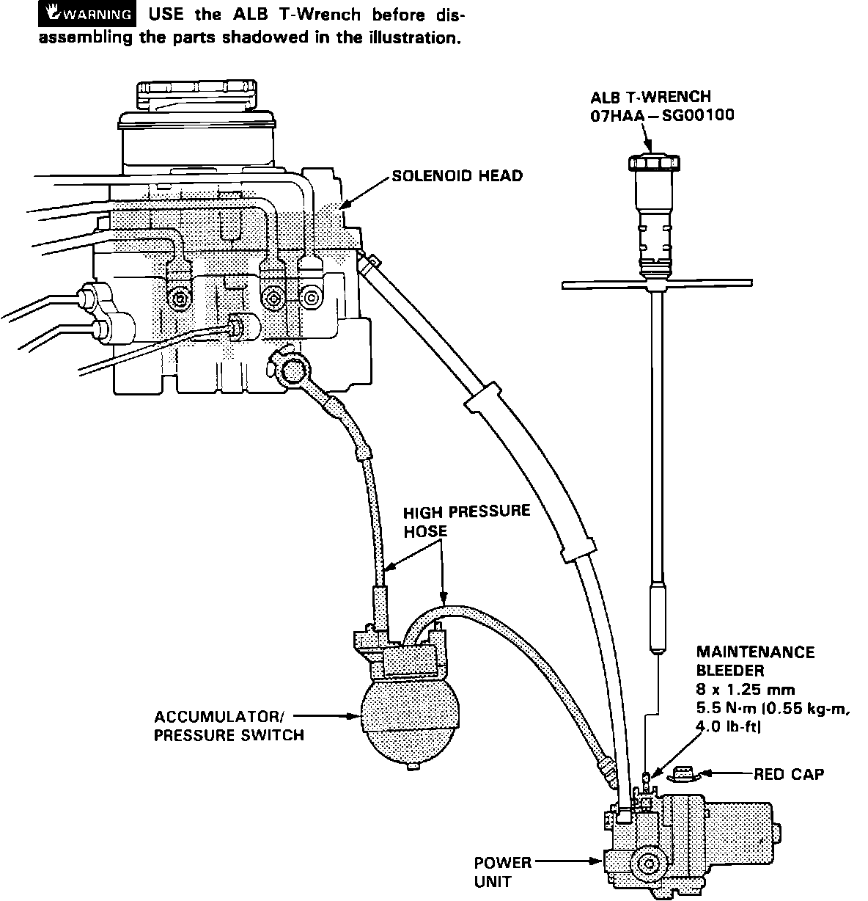
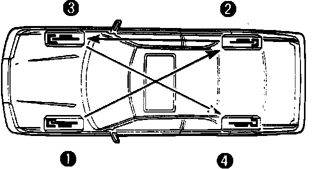
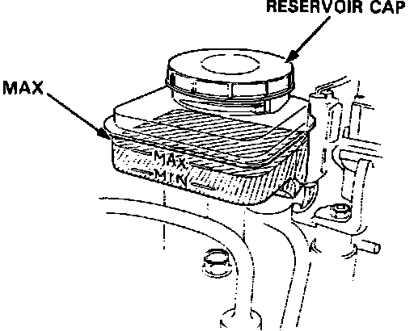
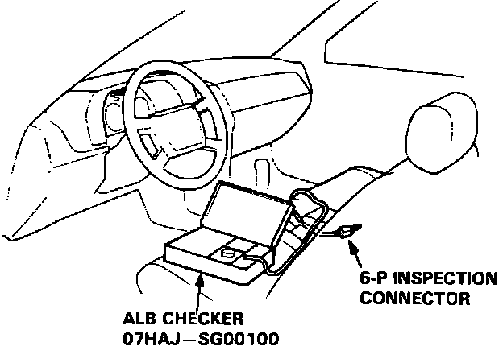
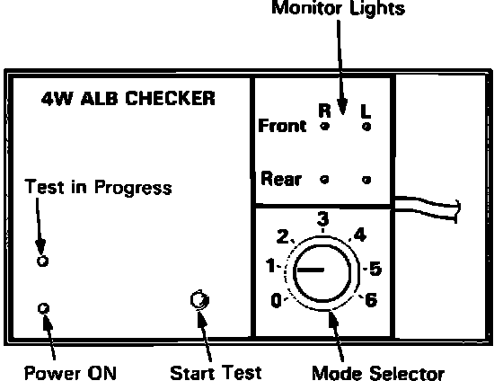

With Anti-Lock Brake (ALB) Checker
DRAINING MODULATOR, ACCUMULATOR AND POWER UNIT FLUID
1. Park car on level ground and block wheels. Thoroughly drain brake fluid from the master cylinder and modulator reservoirs.
Maintenance Bleeder:

2. Remove the red cap on the bleeder screw on top of the power unit.
3. Install the ALB T-wrench on the bleeder screw. DO NOT attempt to open bleeder screw without ALB T-wrench.
WARNING: Hydraulic brake fluid in the modulator, accumulator and power unit is under high pressure (1,721 - 3,271 psi). A face shield should be worn when opening the system to prevent brake fluid from being sprayed into the eyes and face. Vehicle painted surfaces should be covered, to prevent damage by brake fluid contact. Place rags around connections when loosening to prevent fluid from spraying.
4. Slowly turn the bleeder screw 1/4 turn to release high pressure fluid.
5. Turn bleeder screw out one complete turn to drain completely.
6. Retighten bleeder screw and discard fluid.
REFILLING FLUID AND BLEEDING AIR FROM SYSTEM
Bleeding Sequence:

When bleeding the hydraulic brake system, procedures are the same as in non-ABS cars. Start with brake master cylinder and proceed to the LF wheel cylinder, RR wheel cylinder, RF wheel cylinder and LR wheel cylinder. The only special procedures required are for the modulator, accumulator and power unit.
WARNING: Hydraulic brake fluid in the modulator, accumulator and power unit is under high pressure (1,721 - 3,271 psi). A face shield should be worn when opening the system to prevent brake fluid from being sprayed into the eyes and face. Vehicle painted surfaces should be covered, to prevent damage by brake fluid contact. Place rags around connections when loosening to prevent fluid from spraying.
Modulator Reservoir Levels:

NOTE: Do not depress the brake pedal while using ALB checker to bleed air from system.
1. Park the vehicle on level ground and block the wheels.
2. Fill the modulator reservoir to the MAX level with DOT 3 or DOT 4 brake fluid from a clean sealed container.
ALB Hookup:

3. Connect the ALB tester. disconnect the 6 pin inspection connector from the connector cover on the cross-member under the front passenger seat and connect the ALB inspection connector.
4. With the transmission in neutral (M/T) or park (A/T), start the engine and release parking brake.
ALB Checker:

5. Turn mode selector to position 1.
6. Press the start test button.
7. Verify that the power unit motor runs momentarily and then stops.
8. Turn the mode selector to position 2 and press the start button.
9. When the fluid coming up into the modulator reservoir is free of bubbles (approx 70 seconds), turn the mode selector to position 6.
10 Press start button and perform step 9.
11. Perform steps 8 thru 10 2-3 times.
12 Fill modulator reservoir to MAX level and install cap.
13 Check ALB function in all modes using ALB checker.